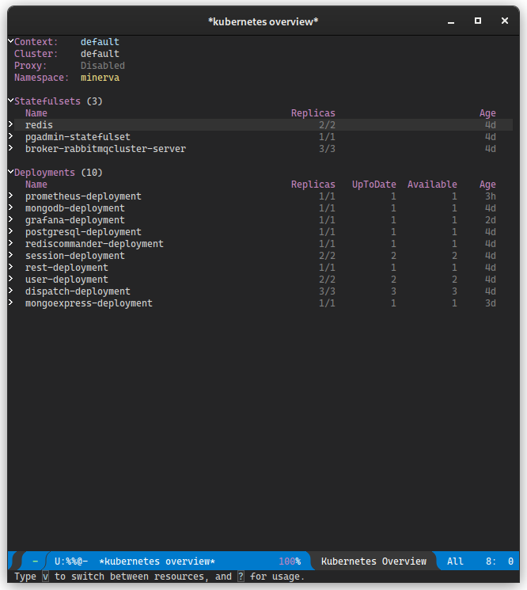

Deploy usando Kubernetes
Você pode realizar deploy do projeto usando Kubernetes. Nos passos a seguir, será mostrado como realizar deploy em um ambiente Kubernetes.
É importante salientar também que o deploy do Minerva System geralmente é feito em um ambiente K3s, o que pode impactar em algumas formas de configuração.
Introdução
Kubernetes é uma ferramenta sofisticada de orquestração de contêineres. O Minerva System é planejado para que seu deploy seja feito utilizando o Kubernetes.
Objetivo
O deploy usando Kubernetes é planejado desde o início do projeto, sendo uma das formas de estado da arte de deploy de aplicações web. Para simular este cenário, utilizamos uma instalação em um cluster local com K3s, em computadores cuja arquitetura seja x86_64 ou ARM64.
Dependências
As configurações de deploy são preparadas de forma a utilizar o próprio registry do DockerHub como fonte para as imagens previamente geradas. Assim, é necessário apenas ter acesso a um cluster com Kubernetes instalado, algo que pode ser simulado através da ferramenta K3s.
Para monitoramento e configuração, use as ferramentas a seguir:
- Kubectl v 1.23.3 ou superior, de acordo com o compatível com seu cluster;
- k9s versão 0.25.18 ou superior, para monitoramento (opcional);
- kubernetes-el, pacote do editor de texto Emacs que permite monitorar um cluster Kubernetes.
A instalação local do K3s é opcional, e poderia ser substituída pelo Minikube, porém essa substituição pode ser impactante na configuração de alguns recursos, especialmente em Ingresses.
Realizando deploy de serviços
Nos passos a seguir, será mostrado como realizar deploy de cada um dos serviços e objetos k8s que fazem parte do Minerva System. Recomenda-se seguir os tópicos em ordem.
Os passos também assumem que a ferramenta kubectl esteja configurada
localmente e que tenha acesso ao cluster.
Geralmente, o kubectl lê a configuração em ~/.kube/config por padrão;
caso sua máquina não possua esse arquivo, verifique se consegue obter a
configuração do Kubernetes para substituí-lo. No caso do K3s, esse arquivo
está em /etc/rancher/k3s/k3s.yaml, e pode ser copiado, de forma
paliativa, para uma outra máquina, desde que o host do cluster seja adequado
na chave server.
Dependências iniciais
Para realizar o deploy do Minerva System, primeiramente precisaremos provisionar as dependências iniciais, software externos que são utilizados pelo resto do sistema.
Namespace do sistema
O namespace deve ser aplicado para que todos os objetos do sistema existam dentro do mesmo. Assim, temos uma forma de encapsular o sistema inteiro com a maior parte de suas dependências.
kubectl apply -f minerva-namespace.yml
PostgreSQL
O próximo passo é realizar o deploy do banco de dados relacional. O Minerva System usa PostgreSQL para tanto. A configuração envolve um Secret, um PersistentVolumeClaim, um Deployment, e um Service de tipo ClusterIP para garantir que o mesmo só possa ser acessado dentro do cluster.
kubectl apply -f postgresql.yml
MongoDB
Para banco de dados não-relacional, utilizaremos o MongoDB. O Minerva System usa o MongoDB principalmente para armazenamento de dados de seção do usuário. A configuração envolve um Secret, um PersistentVolumeClaim, um Deployment, e um Service de tipo ClusterIP, para que o MongoDB só possa ser acessado dentro do cluster.
kubectl apply -f mongodb.yml
Redis
Como serviço de cache, usamos um cluster Redis configurado manualmente. Esse cluster levanta um mínimo de duas instâncias do Redis, de forma que uma instância seja mestre e as demais sejam instâncias que operam como meras réplicas.
O Redis possui um ConfigMap que define um arquivo de configuração para o cluster. Além disso, temos um PersistentVolumeClaim, e o cluster definido através de um StatefulSet Temos também um Service de tipo ClusterIP para que ele possa ser acessado, e um HorizontalPodAutoscaler que adiciona ou remove réplicas sob demanda.
kubectl apply -f redis.yml
RabbitMQ
O Minerva System usa o RabbitMQ para serviços de mensageria.
O RabbitMQ é utilizado majoritariamente para abrigar mensagens de operações que possam ser despachadas de forma assíncrona, sem uma interferência direta do usuário, ou que sejam efeito colateral de outras operações no sistema.
Para provisionar o RabbitMQ, precisamos provisionar um operador de cluster para RabbitMQ, e então criar uma instância de cluster do RabbitMQ, que criará réplicas do serviço de forma eficiente.
Operador de cluster
Para realizarmos o deploy de um operador de cluster, utilizaremos o projeto
RabbitMQ Cluster Operator.
O arquivo para deploy do cluster está reproduzido no repositório; igualmente,
sua licença pode ser encontrada em rabbitmq-cluster-operator.LICENSE.
kubectl apply -f rabbitmq-cluster-operator.yml
Instância do cluster
Agora, para criarmos uma instância do cluster RabbitMQ com três réplicas, podemos aplicar a configuração criada para o Minerva System. Isso criará um StatefulSet e um Service de tipo ClusterIP para o nosso cluster RabbitMQ.
kubectl apply -f broker-rabbitmqcluster
Configuração das dependências
Uma vez que as dependências iniciais estejam preparadas, poderemos configurar os bancos de dados, criar filas de mensagens e preparar tenants.
Configuração geral de Servers e Portas
Inicialmente, precisaremos criar dois ConfigMaps, que registram os hosts e portas dos serviços que serão criados. Essas configurações são compartilhadas pela maioria dos serviços.
kubectl apply -f servers-configmap.yml
kubectl apply -f ports-configmap.yml
Serviço de preparação
Isso pode ser feito através do módulo RUNONCE, composto de um ConfigMap, um Secret e um Job. Ao aplicar sua configuração, o Job será executado e preparará as dependências.
kubectl apply -f minerva-runonce.yml
Módulos do Minerva System
A partir desse momento, podemos começar o deploy dos módulos do Minerva System. Cada um dos módulos é basicamente uma aplicação stateless, sendo geralmente composto de um Deployment, um Service de tipo ClusterIP, e um HorizontalPodAutoscaler que criará ou destruirá réplicas dos Pods sob demanda. Alguns módulos também possuem o próprio ConfigMap para definir algumas variáveis de ambiente necessárias.
USER
O serviço gRPC de gerenciamento de usuários.
kubectl apply -f minerva-user.yml
SESSION
O serviço gRPC de gerenciamento de sessões de usuários.
kubectl apply -f minerva-session.yml
DISPATCH
O serviço de despacho de mensagens vindas do RabbitMQ.
Esse serviço não possui um Service, já que não pode ser acessado diretamente; seu único objetivo é despachar mensagens para outros serviços, de acordo com o que for requisitado através de mensagens via filas no RabbitMQ.
kubectl apply -f minerva-dispatch.yml
REST (Gateway)
O serviço REST funciona como um gateway para o back-end do Minerva System. Através desse serviço, a API poderá ser acessada, e as operações serão redirecionadas para outros serviços, de acordo com o domínio da regra de negócio em questão.
REST é o único módulo cujo Service possui um tipo diferente, sendo um tipo LoadBalancer, que fornece acesso direto à API através da porta 30000.
kubectl apply -f minerva-rest.yml
Utilitários de monitoramento
Com o deploy do sistema feito, poderemos também provisionar algumas ferramentas para ajudar no monitoramento do mesmo.
Prometheus
O Prometheus é um serviço que realiza scraping de informações expostas em endpoints de métricas. Através dele, é possível recuperar dados que podem ser posteriormente trabalhados para analisar a saúde de serviços ou até mesmo do cluster Kubernetes.
Configurando o k3s
Primeiramente, configure a sua instância do K3s, como orienta
esse link;
basta apenas, no seu nó master do cluster, criar o arquivo
/etc/rancher/k3s/config.yaml com o conteúdo:
etcd-expose-metrics: true
Em seguida, reinicie o serviço do K3s.
Instalando o Kube-State-Metrics
O serviço kube-state-metrics provê algumas métricas coletadas através dos serviços no cluster Kubernetes. Voce pôderá instalar uma configuração padrão, como colocado neste link, clonando o repositório do projeto e aplicando essa configuração:
git clone https://github.com/kubernetes/kube-state-metrics
kubectl apply -f kube-state-metrics/examples/standard/
Provisionando o Prometheus
Como o Prometheus realiza scraping de dados nos serviços do Kubernetes e até mesmo em outros serviços, ele necessita de configurações de RBAC, o que implica na criação de objetos como ClusterRoles, ClusterRoleBindings e ServiceAccounts. Além disso, o Prometheus possui arquivos de configuração em um ConfigMap, um Deployment e um Service.
kubectl apply -f util/prometheus.yml
Mongo Express
O Mongo Express é uma ferramenta para explorar e editar o conteúdo do
banco de dados não-relacional MongoDB. Esse serviço é exposto através de
um Service de tipo NodePort, na porta 31085.
O Mongo Express do Minerva já vem configurado com configuração de acesso
ao MongoDB. Caso sejam requisitadas credenciais para abrir o aplicativo,
utilize o usuário mongo e a senha mongo.
ATENÇÃO: Caso seja necessário usar uma ferramenta mais específica, como
MongoDB Compass, você poderá realizar port-forward do Deployment do MongoDB
e conectar-se à porta via localhost.
kubectl apply -f util/mongoexpress.yml
PgAdmin4
O PgAdmin4 é uma ferramenta para explorar e editar o conteúdo do banco de
dados relacional PostgreSQL. Esse serviço é exposto através de um Service
de tipo NodePort, na porta 31084.
O PgAdmin4 do Minerva já vem configurado com dados de acesso ao PostgreSQL.
Para efetuar login, use o usuário admin@admin.com e a senha admin.
Para acessar o PostgreSQL, você precisará do usuário e senha padrão do
mesmo também (postgres para ambos, por padrão).
ATENÇÃO: Caso seja necessário usar uma ferramenta mais específica, como
DBeaver, você poderá realizar port-forward do Deployment do PostgreSQL
e conectar-se à porta via localhost.
kubectl apply -f util/pgadmin.yml
Grafana
O Grafana é um serviço para criação e mostra de dashboards que operam a partir de métricas coletadas em serviços variados. No caso do Minerva, esses dados vêm principalmente do serviço Prometheus, previamente configurado.
Para o Grafana, provisionaremos alguns ConfigMaps com configuração inicial e alguns dashboards padrão para o cluster RabbitMQ. Como essa configuração inicial produz um arquivo relativamente grande, é necessário forçá-lo a ser processado de forma server-side.
As credenciais padrão do Grafana são o usuário admin e senha admin.
Durante o primeiro login, você poderá alterar a senha inicial.
kubectl apply -f --server-side=true util/grafana-data.yml
kubectl apply -f util/grafana.yml
Para mais detalhes da configuração do Grafana, veja a página de Ferramentas para monitoramento externo.
Ingresses (via Traefik)
Os Ingresses são formas mais explícitas de acesso a alguns serviços do cluster, pois abrem rotas propriamente ditas que "camuflam" requisições nas mesmas e realizam forwarding para serviços específicos.
Os Ingresses atualmente preparados são compatíveis com a infraestrutura padrão do K3s, que utiliza Traefik como proxy reverso de Ingresses padrão.
Atualmente, os ingresses exportam as seguintes rotas:
/api, para a API do Minerva System;/pgadmin, para o PgAdmin4;/mongoexpress, para o Mongo Express;/grafana, para o Grafana.
kubectl apply -f minerva-ingress.yml
Acessando serviços externamente
Pode ser necessário acessar, de forma externa, algum serviço que esteja no cluster, especialmente se o mesmo possuir um Service do tipo ClusterIP, que não permite acesso externo diretamente.
O Kubernetes provê algumas formas de realizar este acesso.
Acessando com Port Forward
Uma forma muito útil de acesso externo é o port forwarding, que realiza bind de uma porta da máquina local a uma porta específica de um pod específico. Também é possível referenciar um conjunto inteiro de réplicas através de um Deployment, ReplicaSet ou StatefulSet.
Para tanto, basta ter o kubectl instalado na sua máquina e
a configuração correta de acesso ao cluster.
O exemplo a seguir realiza port forwarding do MongoDB para
a máquina local, de forma que a porta 27017 do pod
esteja acessível localmente através da porta 9050. Esse
tipo de manobra será útil especialmente para acesso externo,
por exemplo, au usar o MongoDB Compass.
kubectl port-forward deployment/mongodb-deployment 9050:27017
Acesso via NodePort
Esse tipo de acesso envolve acessar alguns Services que possuam um tipo NodePort ou LoadBalancer, estando expostos sob uma porta em qualquer IP do cluster. A tabela a seguir mostra uma relação dessas portas.
| Serviço | Porta |
|---|---|
| API | 30000 |
| PgAdmin 4 | 31084 |
| Mongo Express | 31085 |
| Redis Commander | 31086 |
| Grafana | 31087 |
Monitoramento e testes
A seguir, estão listadas algumas configurações relacionadas a utilitários de monitoramento e testes do Minerva no cluster.
k9s

Uma das ferramentas possíveis de se utilizar para monitorar o cluster
é o k9s.
A ferramenta utiliza uma edição modal, muito parecida com o editor Vim. Os comandos possuem um sistema de autocompletar e são também mostrados na tela. Alguns comandos interessantes de serem utilizados são:
:q: Sair da aplicação.:po: Lista de Pods.:svc: Lista de Services.:dp: Lista de Deployments.:ing: Lista de Ingresses.:hpa: Lista de HorizontalPodAutoscalers.:pvc: Lista de PersistentVolumeClaims.:pv: Lista de PersistentVolumes.
Você poderá usar o k9s para visualizar logs e também para modificar
algumas propriedades mais avançadas também. É possível até mesmo acessar
diretamente o console dos contêineres.
kubernetes-el

O kubernetes-el é um pacote para o editor de texto Emacs que
permite inspecionar um cluster Kubernetes.
Para mais informações, veja o site oficial do pacote.
Dashboard do Kubernetes
É possível acessar o Dashboard padrão do Kubernetes para realizar gerenciamento e monitoramento, porém o K3s exige configuração extra.
Para ter acesso ao Dashboard, siga as orientações no site oficial da Rancher.
Testes de Stress
Há alguns testes de stress para o Minerva System. Estes testes servem principalmente para testar os limites e o comportamento do sistema quando o mesmo estiver sob uma grande carga de operações.
Testes de spike com K6
Os testes padrão são realizados através da ferramenta K6, porém essa ferramenta demanda a extensão Faker para que funcione adequadamente. Você poderá encontrar as instruções de instalação dessa extensão no repositório da mesma.
No diretório deploy/tests/k6, você poderá executar o k6 compilado com a extensão
referida. O host do cluster deverá ser informado através da variável de ambiente
MINERVA_HOST. Note que o k6 assume que o host informado possua uma rota /api,
então você deverá garantir que o Ingress do cluster esteja funcionando.
O exemplo a seguir mostra como executar os spike tests para stress de operações de sessão e de usuários.
# Testes de sessão
MINERVA_HOST=http://$IP_DO_CLUSTER k6 run session_spike.js
# Testes de usuários
MINERVA_HOST=http://$IP_DO_CLUSTER k6 run users_spike.js
A execução dos testes gerará um arquivo html ao final, que mostra um formato
interativo para inspeção dos resultados de testes.
Testes de stress legados (via Bash)
Para realizar testes de stress com o formato legado, use o script
deploy/tests/legacy/stress_test.sh.
Você poderá testar cada sistema crucial usando um comando como este:
./deploy/tests/legacy/stress_test.sh $IP_DO_CLUSTER/api user
Para maiores informações, execute o script sem argumentos e veja instruções rápidas de utilização.